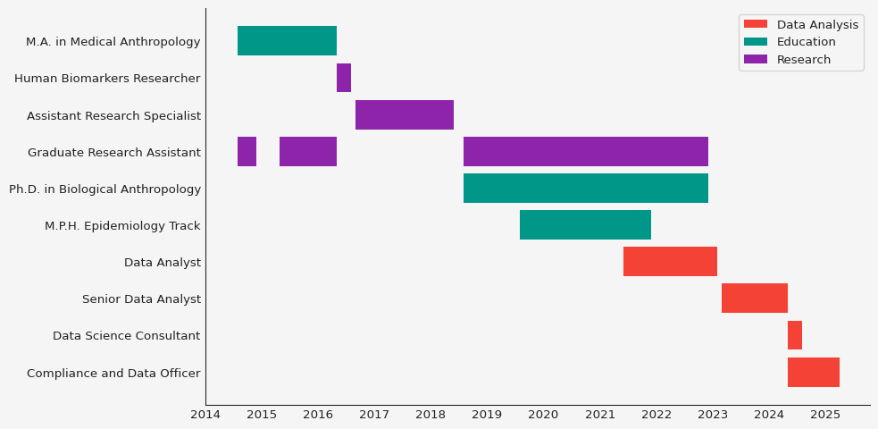

import polars as pl
import matplotlib.pyplot as plt
import seaborn as sns
from datetime import datetimeMake a gantt chart of career. That would help tell the story.
# Define the data
data = {
"activity": [
"Graduate Research Assistant", "Graduate Research Assistant", "Human Biomarkers Researcher",
"Assistant Research Specialist", "M.A. in Medical Anthropology", "Ph.D. in Biological Anthropology",
"Graduate Research Assistant", "Data Analyst", "Graduate Research Assistant",
"Senior Data Analyst", "Compliance and Data Officer", "Data Science Consultant"
],
"start_date": [
"August 2014", "May 2015", "May 2016", "September 2016", "August 2014", "August 2018",
"August 2018", "June 2021", "August 2018", "March 2023", "May 2024", "May 2024"
],
"end_date": [
"December 2014", "May 2016", "August 2016", "June 2018", "May 2016", "December 2022",
"December 2022", "February 2023", "December 2022", "May 2024", "April 2025", "August 2024"
],
"activity_type": [
"Research", "Research", "Research", "Research", "Education", "Education",
"Research", "Data Analysis", "Research", "Data Analysis", "Data Analysis", "Data Analysis"
]
}
# Convert to Polars DataFrame and adjust date format
df = pl.DataFrame(data).with_columns([
(pl.col("start_date") + "-01").str.strptime(pl.Date, "%B %Y-%d", strict=False),
(pl.col("end_date") + "-01").str.strptime(pl.Date, "%B %Y-%d", strict=False)
]).sort("start_date", descending=True)
# Show the DataFrame
print(df)shape: (12, 4)
┌─────────────────────────────────┬────────────┬────────────┬───────────────┐
│ activity ┆ start_date ┆ end_date ┆ activity_type │
│ --- ┆ --- ┆ --- ┆ --- │
│ str ┆ date ┆ date ┆ str │
╞═════════════════════════════════╪════════════╪════════════╪═══════════════╡
│ Compliance and Data Officer ┆ 2024-05-01 ┆ 2025-04-01 ┆ Data Analysis │
│ Data Science Consultant ┆ 2024-05-01 ┆ 2024-08-01 ┆ Data Analysis │
│ Senior Data Analyst ┆ 2023-03-01 ┆ 2024-05-01 ┆ Data Analysis │
│ Data Analyst ┆ 2021-06-01 ┆ 2023-02-01 ┆ Data Analysis │
│ Ph.D. in Biological Anthropolo… ┆ 2018-08-01 ┆ 2022-12-01 ┆ Education │
│ … ┆ … ┆ … ┆ … │
│ Assistant Research Specialist ┆ 2016-09-01 ┆ 2018-06-01 ┆ Research │
│ Human Biomarkers Researcher ┆ 2016-05-01 ┆ 2016-08-01 ┆ Research │
│ Graduate Research Assistant ┆ 2015-05-01 ┆ 2016-05-01 ┆ Research │
│ Graduate Research Assistant ┆ 2014-08-01 ┆ 2014-12-01 ┆ Research │
│ M.A. in Medical Anthropology ┆ 2014-08-01 ┆ 2016-05-01 ┆ Education │
└─────────────────────────────────┴────────────┴────────────┴───────────────┘# Define colors for each activity type
activity_colors = {
"Research": "tab:blue",
"Education": "tab:green",
"Data Analysis": "tab:orange"
}
# Create figure and axis
fig, ax = plt.subplots(figsize=(10, 6))
# Generate Gantt bars
for i, row in enumerate(df.iter_rows(named=True)):
start = row["start_date"]
end = row["end_date"]
activity = row["activity"]
activity_type = row["activity_type"]
ax.barh(activity, (end - start).days, left=start, color=activity_colors.get(activity_type, "gray"))
# Labels and title
ax.set_ylabel("Activity")
ax.set_title("Gantt Chart of Activities")
plt.show()